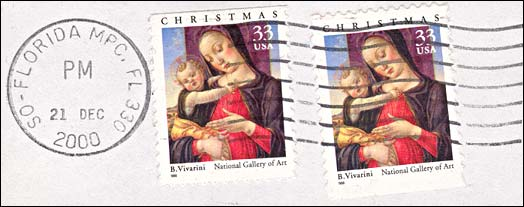
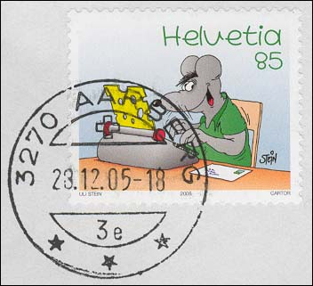
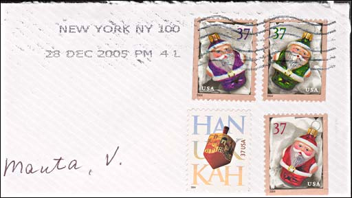

I have recently created
several web pages, in which I have used some stamp related material that I
have received toward the end of the year 2005. Two of pages presented covers
and cards specially created or cancelled for the stamp collectors.
http://www.artonstamps.org/Magazine/christmas05/xmas-post-adm.htm
http://www.artonstamps.org/Countries/Liechtenstein/2005/christmas-2005.htm
Another page featured the
2005 redenomination of the Romania currency, as reflected on covers received
by myself from non-philatelists in the months of November and December 2005.
http://www.marci-postale.com/Redenom/redenom-2005.htm
I leave to the readers to
judge the quality of the cancellations for both categories of mailings.
I'd like to show you three fragments of covers that were sent during the
holiday season. They were sent by people who know that I'm a stamp
collector, and who tried to make me
happy. I would like to thank them a lot, and to display the results of
their efforts. I'll start by two Christmas stamps issued by the US post in
1999. The stamps are really nice but the cancel spoils somehow the pleasure
of collecting...

Follow two fragments of
covers that were sent on the
same day, the 28 December 2005, one from the small city of Aarberg in
Switzerland and the other one from the big New York City, USA. I'll start by the Swiss
cover, that displays a comics by the Swiss artist Uli Stein. The stamp was
issued on the 8th of March 2005, and it shows "The impertinent mouse writing
a letter". I suppose that any stamp collector will appreciate not only the
Swiss cheese letter that comes out from the typewriter but also the franked
cover that is already prepared for the sending. The clear and clean cancel
covers a bit the nose of the mouse but adds a certain (I would say a postal)
reality to the whole.

And now let's take a look at a letter from a dear friend of mine from New
York City. It didn't contain cheese but a nice greeting card, and this way
perfectly satisfied the Country Conditions for Mailing to Switzerland, that
prohibit, among others: human remains, live plants and animals, lottery
tickets and advertisements for lotteries, mini-spies or radar detectors (as
specified on the page
http://pe.usps.gov/text/imm/immicl/immiclss_025.html )

The letter is overpaid, by a
total of $1.48, instead of the required $0.80 for an Airmail Letter Post
from the USA to Switzerland. This was obviously made in order to send me
more related stamps, what supposes more joy for the receiver.
Just to mention that this
mailing perfectly fits in the policy of the USPS marketing, as lectured by
the excerpt that follows:
DELIVER THE JOY!
NEW HOLIDAY ORNAMENTS STAMPS ISSUED BY U.S. POSTAL SERVICE AND AND
LORD & TAYLOR UNVEILED ITS CHRISTMAS WINDOWS SALUTING THE U.S. POSTAL
SERVICE
"Holiday cards, letters and gifts carry seasonal messages, but the season's
greetings really begin on the outside, on the envelope or package," said
John Nolan, Deputy Postmaster General, U.S. Postal Service. "Over 140
million Holiday Ornaments stamps will grace a bevy of envelopes and packages
as they travel across the country this holiday season, and it is our hope
that the stamps will deliver love, peace and joy."
http://www.usps.com/communications/news/stamps/2004.htm
Such a pity that my joy was practically annihilated, to say so, as well by
the cancellation as by its absence. Not only that the cancel covers, with
its traditional dirty waves, the faces on two stamps, but other two stamps
weren't cancelled at all. If the reason for such heavy cancels was to hinder
the stamps from being reused (taking the risk that the resulted stamps won't
fully "deliver love, peace and joy", as intended) then it's obvious that for
50% of the stamps shown above this attempt totally failed.
I think that now I better
understand why living people don't appear on US stamps.